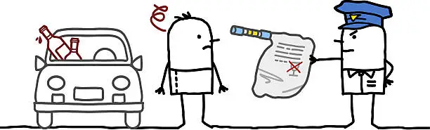

¿QUÉ ES LA ALCOHOLEMIA?
La alcoholemia es la concentración de alcohol en sangre, un dato crucial para evaluar el grado de intoxicación etílica de una persona. Cuando tomamos bebidas alcohólicas, el alcohol pasa al torrente sanguíneo y comienza a afectar tanto el cuerpo como la mente. El nivel de alcoholemia se expresa en gramos de alcohol por litro de sangre (g/L) y puede determinarse mediante diferentes métodos, siendo el análisis de sangre y las pruebas de aliento con alcoholímetro los más comunes.

Esta medición en g/L es fundamental para evaluar la capacidad de una persona para realizar actividades que requieren atención y coordinación, como conducir. La conducción bajo los efectos del alcohol es una de las principales causas de accidentes de tráfico en el mundo, y cada país ha establecido normativas específicas para combatir esta problemática y garantizar la seguridad vial. Los límites legales de alcoholemia varían, pero generalmente se sitúan entre 0,2 y 0,5 g/L para conductores particulares. Por otro lado, hay muchos países que han adoptado la política de tolerancia cero, donde el límite es directamente 0 g/L, cualquiera sea el caso. Las sanciones por conducir alcoholizado pueden variar desde multas económicas y la suspensión de la licencia de conducir hasta penas de cárcel en casos de reincidencia o accidentes graves. Para más información sobre el control de alcoholemia, visita este artículo sobre control de alcoholemia en Wikipedia.
ALCOHOLÍMETRO
A continuación, te presentamos nuestro "alcoholímetro online", una calculadora de alcoholemia basada en la fórmula de Widmark. ¿Es 100% exacta? No, pero es bastante precisa. ¿Van a recopilar mis datos? No, tranquilo/a, no somos Facebook.
Title
Results